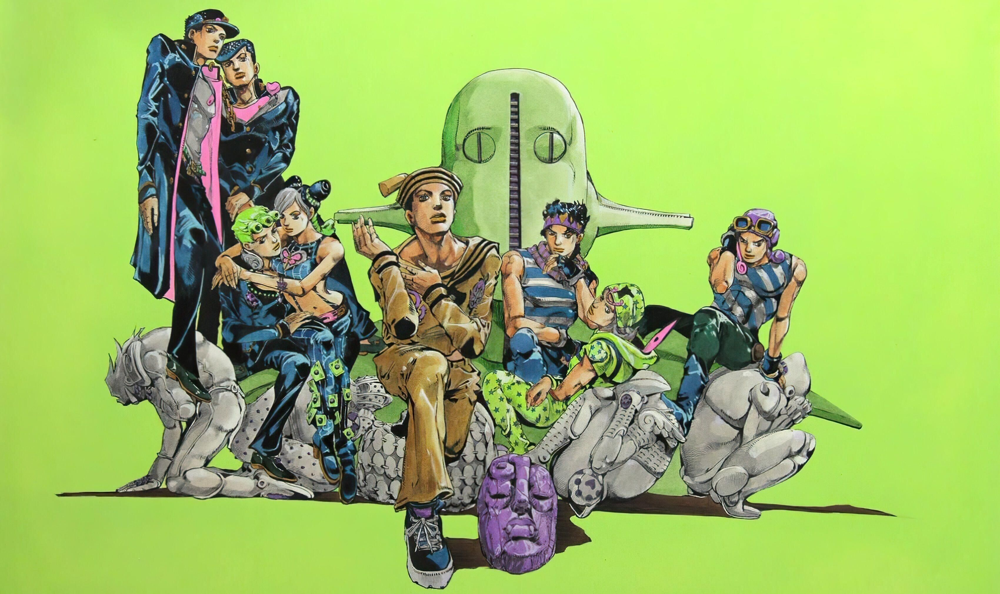

-

- 
-

-


故事要从1888年的英国说起 主角乔纳森·乔斯达是一名个性善良,有正义感,以成为绅士为目标的青年贵族 他的父亲在某次意外中,被出身下层阶级,心怀不轨的达利·欧布兰度所救 达利欧死后,儿子迪奥成为乔斯达的养子 他看似聪慧懂事，其实企图夺取其家产 最后被乔纳森识破 为了脱困,迪奥戴上具有特殊能力的石鬼面,变成吸血鬼,杀死了乔纳森的父亲 乔纳森为了帮父亲复仇,让迪奥不再为非作歹,向神秘的绅士齐贝林学习波纹气功 乔纳森虽成功打败迪奥 却和迪奥同归于尽，一起沉入了大西洋中 留下肚中怀有乔纳森的孩子的妻子艾莉娜孤身一人

故事舞台来到1938年的美国 主角为乔纳森的孙子——乔瑟夫·乔斯达 虽然不像祖父般绅士,是个有点调皮的小混混 但因为继承了乔斯达血统,正义感十足,并天生具有波纹气功能力 乔瑟夫遇见了和石鬼面相关的古老超级生物——柱之男 也结识了齐贝林的孙子西撒 西撒为了帮祖父齐贝林报仇决定和乔纳森一起击败柱之男 两人也同时到波纹高手莉莎莉莎的地方接受训练 乔瑟夫击败了柱之男后,终于了解了自己的身世 并与莉莎莉莎的女仆丝吉Q结婚成家

《星尘远征军》的故事设定在1987年的日本 乔瑟夫的外孙——空条承太郎,头脑清晰、沉着冷静 虽然外表看起来像个不良少年,说话也非常没礼貌, 但其实是既有正义感又温柔的17岁少年,相当受女孩子们欢迎 乔纳森与迪奥死后一百年 迪奥从大西洋中苏醒 同时,因为迪奥的复活,承太郎等继承乔斯达血脉的人皆出现了替身能力 但因为承太郎母亲无法抵抗替身能力的作用,陷入了病危的窘境 承太郎为了拯救命在旦夕的母亲 和外公乔瑟夫、伙伴们从日本前往迪奥的所在地埃及 与迪奥展开决斗。

在1999年的日本——杜王町 乔瑟夫和朋子的私生子——东方仗助 个性温和善良,非常受女生欢迎 也因为继承了乔斯达家血统,正义感十足 他所居住在日本小镇杜王町 居民看似平凡,其实都拥有替身能力 仗助也接连地和这些人相遇 其中包括一名连续杀人犯吉良吉影 仗助为了守护杜王町,和吉良吉影进行战斗 最后终于让这小镇回到和平的时代

故事舞台为2001年的意大利 主角为迪奥的儿子——乔鲁诺·乔巴纳 因为迪奥头部以下为乔纳森的身体 所以同时拥有迪奥和乔斯达家族的血统 虽身为反派的后代,不欺负弱小,也很厌恶恃强凌弱之人 面对敌人下手也是毫不留情 他与当地黑帮成员起了争执,并杀死对方,被黑帮追缉 但最后乔鲁诺也加入了黑帮,还成为了流氓巨星 与伙伴们一边执行任务,一边找出黑帮的幕后老大迪亚波罗 最终乔鲁诺打败了迪亚波罗 成为了黑帮的新老大 致力于扫荡义大利的毒品交易

2011 年,美国佛罗里达州 空条徐伦和她的爱人开车时发生了意外 她被判刑进入监狱 在绝望的边缘,她从父亲那里收到了一个吊坠 唤醒了她内心深处的神秘力量——替身 令人费解的事件接连发生 父亲——承太郎探监时告诉了她 “迪奥”这个名字以及乔斯达家族世代的宿命 徐伦最终走出了那座监狱,勇敢地面对命运 与迪奥旧友——普奇展开最终对决 乔斯达家族和迪奥长达百年的宿命对决终于结束！

1890年,一场横断北美大陆、总长度六千公里的超长程赛马“STEEL BALL RUN”（SBR）即将展开 这是主角乔尼·乔斯达跨越青春期、迈向大人的故事 乔尼‧乔斯达曾是顶尖骑手,但一起枪击案使他半身不遂 他遇见了神秘男子杰洛·齐贝林 杰洛手中的旋转铁球让乔尼再一次站起 乔尼为了追寻让自己重新站起的方法,跟着杰洛参与了SBR 表面上、SBR是由活动策划家史蒂芬·史提尔所组织的 但比赛的幕后主使其实是美国政府 美国总统法尼·瓦伦泰为了搜集散落在北美大陆上的、不可思议的圣人遗体而筹划了这场大赛 每一份圣人遗体都能带给持有者替身能力 而完整的遗体更具神力 总统的目的便是取得完整遗体以确保美国的荣耀

住在杜王町小镇的平凡少女——广濑·康穗 在壁之眼的一处泥巴坑中 发现了一名拥有替身能力的失忆男子 该男子被东方家收养并命名为“东方·定助” 为了找回失去的记忆 定助开始了他的追寻 在追寻中,定助的身世之谜渐渐与东方家的怪病及一种神秘的果实联系起来